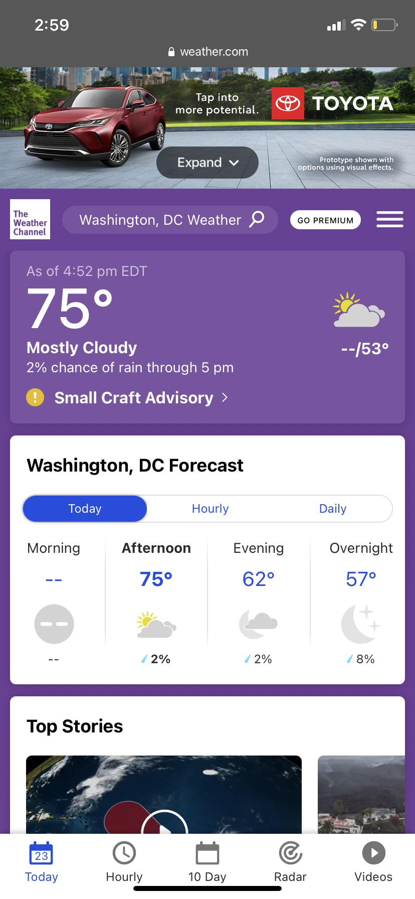

Visual Hierarchy
The Weather Channel
https://weather.com

Though there is a PC website, I think the mobile browser is better at showing this example
because on mobile what catches your eye first is the purple section which is where the information,
you’re looking for about the weather can be found. The temperature is big and bold as that’s the first
thing people look for when checking the weather, then you have the other smaller details like how cloudy
it is and chance of rain. Then they show you a weekly report if you’re interested to see what it would
be like during the week. If you’re on the computer, it kind of accomplishes the same thing but the
current weather is much smaller so it’s not as visible, but you do get a header of timeframes that
takes you to another page. I still think the mobile site is much better at visual hierarchy as it shows
you the most important information first.
White Space and Clean Design
Etsy
https://www.etsy.com
Now Etsy’s home page is nice to look at. Not only does it use light colors so it’s not harsh on the eyes,
but it also has a decent amount of white space between its section/products. This gives you a sense of
organization, but it also helps people see clearer. I also think that because of their spacing,
it feels almost comfortable just browsing through their selection of products almost like you’re at a
physical store just 5browsing the aisles.
P.A.R.C Proximity
Stardew Valley Wiki
https://stardewvalleywiki.com/Stardew_Valley_Wiki

Stardew Valley wiki on the other hand, is cluttered with information. It’s understandable as the game
itself does have a lot, so they need find a way to organize all that information and they decided to
put similar things together and even has subsections to help with that. You have the basics of the game
together with the about section, so you know what the game is about. Then you have the meat of the game
which is information about the mechanics of the game and what to do, then finally you have the valley
and environment which gives you information on the various places and the environment of said location.
Everything that is related is grouped together nicely and how one section guides you into another
(How to start playing leads into gameplay which leads to location and environment).